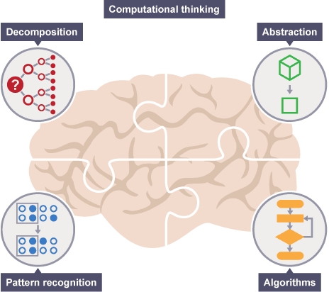

A brief introduction to Computational Thinking
Introduction
The world as we know it is a consequence of a process called evolution. This process began with human beings’ ability to communicate,
where we interacted with each other to solve problems. The way we solve problems has evolved over time.
Computational Thinking (CT) is a line of thoughts that allow us to decompose a complex problem into small pieces,
using concepts that are fundamental to computer science. Computational Thinking(CT) is the mental skill to apply
fundamental concepts and reasoning, derived from modern digital computers and computer science, in all areas, including day-to-day activities.
In practice, some researchers agree (BBC Bitesize 2023) that there are four cornerstones of CT:
- Decomposition: Break down a big problem into small and manageable parts.
- Pattern Recognition: Recognize and reuse recurrent patterns.
- Abstraction: Ignore (abstract way from) irrelevant details.
- Algorithms: A step-by-step solution to solve a problem.

Source: https://www.bbc.co.uk/bitesize/guides/zp92mp3/revision/1
Example
The CT process described above, can be applied to problems from different disciplines outside of computer science.
An example of this could be a student trying to finish a university assignment consisting of three pages.
To achieve this, he could apply CT and decide to decompose the task into one page each.
Right after, abstract the main topics that each page would require, such as: reviewing the content of each page,
reviewing the citations and reviewing the language used in each page. Furthermore, if we had to see a pattern we could foresee that students
generally follow a similar structure when completing an assignment, such as: 1. setting a deadline, 2. thinking and writing the content, 3. reviewing the content,
4. reviewing citations, 5. reviewing grammar / language, and finally 6. uploading the assignment.
In that sense, CT represents the skill of solving problems. It develops the user’s
critical thinking skills, logical reasoning and creativity. It has been argued (Wang 2016)
that CT is a mental skill that helps expand the mind, increases efficiency, avoids
mistakes and anticipates pitfalls. Improving interaction and communication with others,
people or machines. Therefore, the application of CT is with education and career
development is fundamental
Importance on Education (Career of study)
Students of programs related to Computer Science (For example, me - MSc in Computing)
will find that CT is everywhere, as the very essence of CT is to learn how the computer
communicates through formal language. As humans, we are familiar with communicating through
our native languages comprised of letters and words, dissimilar to how computers communicate
through code and logical reasoning.
The Computer Science program (in which I am enrolled) teaches various computer
languages structured within computational thinking. Learning how each
line of code works helps students to design efficient algorithms that can
provide innovative solutions. The more experience one has with CT, the more
one can analyse more complex data, and to process and provide a solution.
Importance on Career
CT is a highly valued and desired skill in any job. A report on computational
thinking by the National Research Council of the National Academies (NRC), stated:
“(…) Computational Thinking is a fundamental analytical skill that everyone,
not just computer scientist, can use to help solve problems, design systems,
and understand human behaviour. (…) Computational thinking is likely to
benefit not only other scientists but also everyone else…” (National Research Counsil 2010)
For students pursuing a career in software engineering (For example, me - student from MSc in computing),
it’s indispensable to master CT because of many reasons explained
throughout this page, however, the most important tool is the pillar
of efficient coding.
Software engineers on a daily basis have to solve multiple problems and there are often different ways to do so.
The most efficient way to solve them
is determined by how well the problems have been analysed, decomposed and solved. By putting in practice this skill at any chance given, I believe I will become a better software engineer over time.